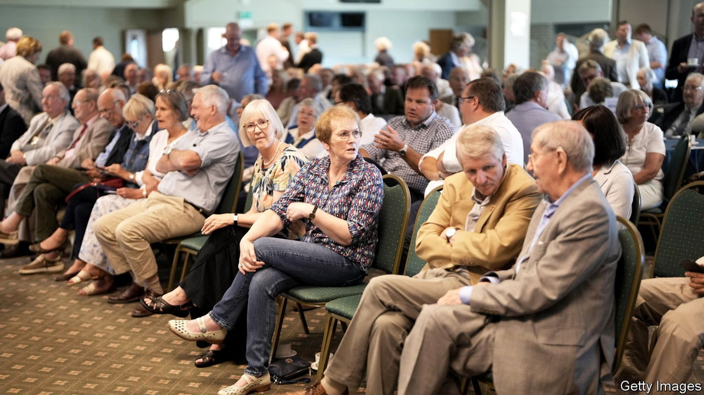
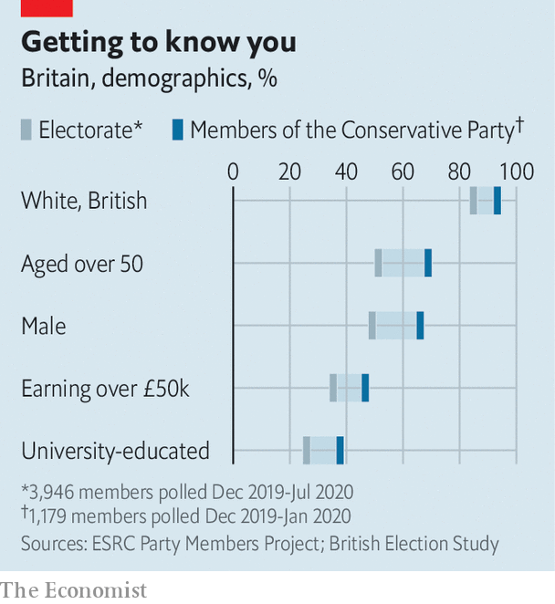

The people about to choose Britain’s next prime minister
Despite rumours to the contrary, the Tory faithful are exactly what you might imagine

It might be a queue for Marylebone Cricket Club, or perhaps an upmarket prostate clinic. There is ample linen. There are panama hats and pink cheeks and pink trousers; there is white hair and bald heads and a lurking suspicion that someone in the vicinity might bear the title “Major”. There are few women. There is almost no one, except the staff, who is not white.
The identity of the Tory party membership is a matter of national importance. The contest between Rishi Sunak, a former chancellor of the exchequer, and Liz Truss, the foreign secretary, to become the leader of the Conservative Party will also decide Britain’s next prime minister. The franchise for this choice belongs to members of the Tory party, at least 160,000-odd of them. Probably. For no one can or will say how many Tory party members there actually are.
What is clear is that they are gathering. In Exeter and Eastbourne, in Cardiff and Cheltenham, Tories are mobilising to attend the hustings for their new leader. Go to these hustings and you can see them queuing, punctually, outside. Some say that the Tory faithful are not what you might think. The queues put paid to that idea: the Tories are precisely what you might think.

According to research from academics at Queen Mary University and Sussex University, 68% of Tory members are over 50; 96% are white; 21% belong to the National Trust or English Heritage; 66% are male (see chart). They are not quite as aristocratic as the panamas and perceptions might suggest: policemen and teachers are among those queuing to get into the hustings. Women are manifestly in the minority. Many are unwilling to speak to a journalist, scattering like startled fish when approached and proffering their husbands as spokesperson instead. The term “Tory wife” appears to be less misogyny than justifiable taxonomy.
Tories may be mockable. That does not mean that they are malignant (or that unusual for members of political parties; Labour’s are 93% white). It is a trope that deviancy lurks behind the upstanding Tory exterior. George Orwell wrote that for a murder to make a truly entertaining news story it should have been perpetrated by a pious Christian preacher or a “chairman of the local Conservative Party branch”. Edward Heath, a former Tory prime minister, felt his party consisted of “shits, bloody shits and fucking shits”.
But the mood at the hustings is benevolent. Mike Trevor, working at the Exeter event as a security guard (and one of the few non-white people there), considers the Tories a “very easy crowd”. Mr Trevor usually does arena concerts. Tories, he says, are “very nice” to deal with. Another guard pulls a face: some members had become stroppy when she took away their water bottles. In the queue, Tories—polite, if prone to the odd harrumph—shuffle forwards.
The hustings do reveal two misconceptions about the Tory party race. The first is the idea that it is about Mr Sunak and Ms Truss. There are, as it were, three of us in these hustings. Many members are there less to elect a new leader than to mourn their old one—and to berate his killer. As one Tory, a fan of Mr Sunak, regretfully observes, in the assassination of Boris Johnson Mr Sunak has been cast as Brutus. On this reading Mr Johnson’s fall was not caused by his own incompetence and duplicity; it was caused by Mr Sunak. It is notable that the largest cheer of the evening in Exeter comes when, during a montage film of past Tory highlights, Mr Johnson pops up celebrating his 2019 election victory. Banquo’s ghost rarely made a better entrance.
The other misconception involves a confusion over conjunctions. Ms Truss is currently well ahead of Mr Sunak—the favourite among mps and the public—in polling of Tory members. A recent YouGov poll put her support at 58%, and his at just 29%. Surveying such a small, opaque electorate is hard but commentators still wonder how, “despite” jibes that she is “bonkers” and a “human hand grenade”, this lead apparently yawns. Speak to Tories at the hustings and it is clear that with Ms Truss—as with Mr Johnson before her—the correct conjunction is not “despite” but “because”. Ms Truss may be “bonkers”, says Colin Trudgeon, a Tory member, but “I love a bit of bonkers. Boris…was nutty as a fruitcake.”
Inside the venues, preconceptions about the candidates are generally confirmed. Ms Truss is, as a now-famous clip in which she discussed British cheese made clear, a friend of the full stop. She peppers her speeches with them. Often even stopping. Midway through a sentence. For effect. She discusses emotive issues: Vladimir Putin, fishermen and proper crops. In our fields.
Mr Sunak, meanwhile, is a man who speaks in subclauses. Sentences and ideas accumulate; complexity is embraced; nuance noted. He discusses corporation tax with enthusiasm. Neither fully wows the audience. Afterwards, Tory members who speak to your correspondent consider that Mr Sunak was more “statesmanlike”. But inside it was Ms Truss’s pauses for which they whooped more. ■